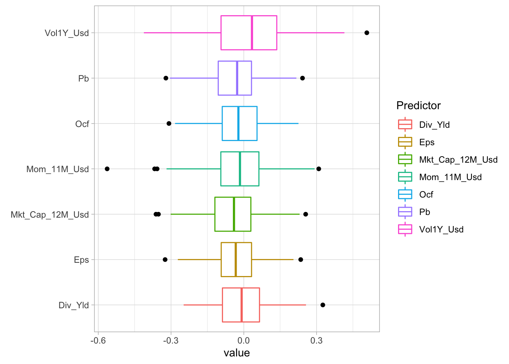
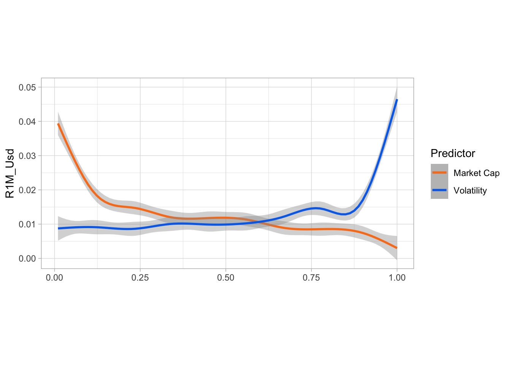
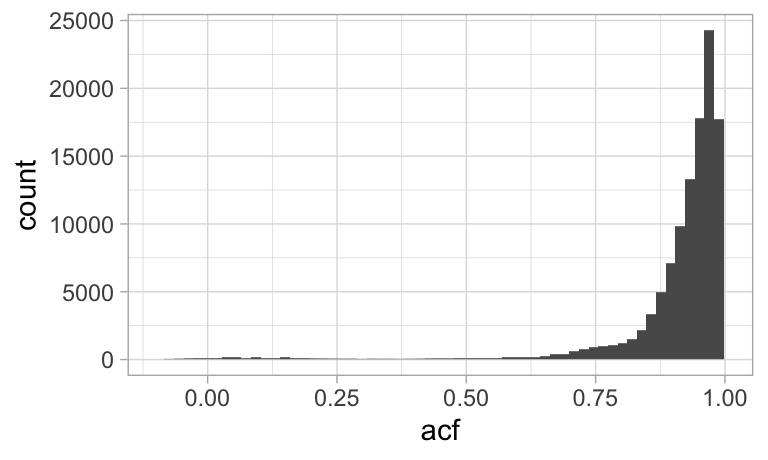
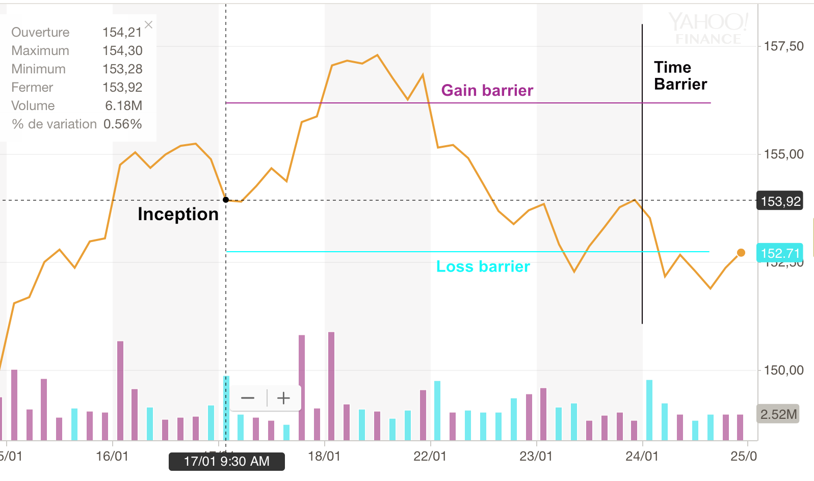
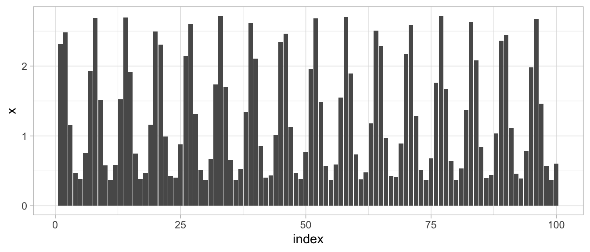
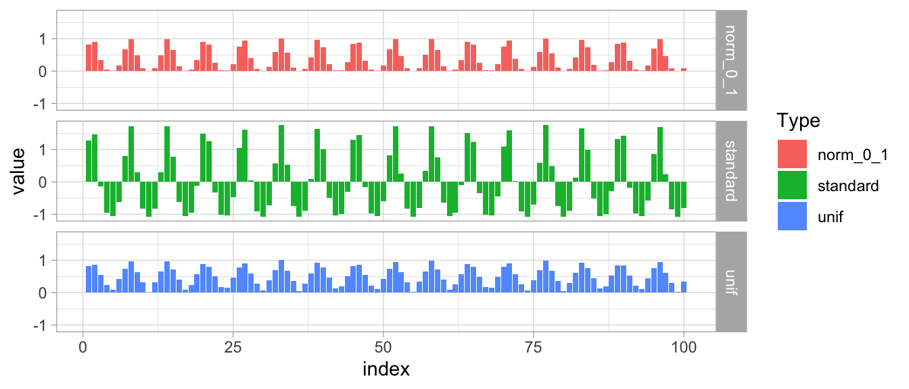
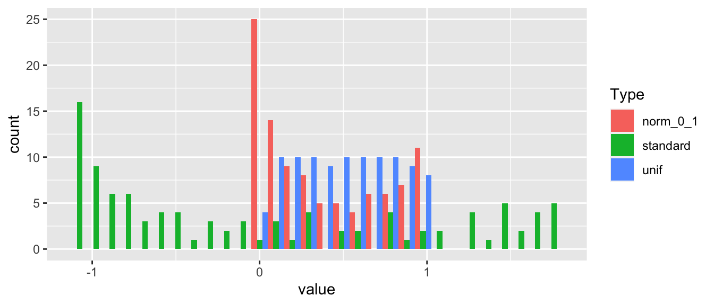

4 数据预处理
我们在本章中描述的方法是由金融应用驱动的。对于非财务数据处理的介绍，我们推荐两本参考书：Boehmke and Greenwell (2019) 的通用机器学习书籍的第 3 章以及 Kuhn and Johnson (2019) 的关于该专用主题的专著。
4.1 了解您的数据
与任何定量研究一样，第一步显然是确保数据值得信赖，即来自可靠的提供者（最低限度）。至少可以说，金融数据提供领域广阔：一些提供商已经很成熟（例如 Bloomberg、Thomson-Reuters、Datastream、CRSP、Morningstar），一些提供商较新（例如 Capital IQ、Ravenpack），还有一些专注于另类数据利基市场（有关详尽列表，请参阅 https://alternativedata.org/data-providers/）。不幸的是，据我们所知，尚未发表任何研究来评估这些提供商的数据可靠性。
第二步是查看 汇总统计量 ：范围（最小值和最大值）以及平均值和中位数。直方图或时间序列图当然携带更多信息，但无法在高维度上进行正确分析。尽管如此，它们有时对于跟踪给定股票和/或特定特征的局部模式或错误很有用。 除了一阶矩之外，二阶量（方差和协方差/相关性）也很重要，因为它们有助于发现共线性。当两个特征高度相关时，某些模型可能会出现问题（例如，简单回归，请参见第 15.1 节）。
通常，预测变量的数量如此之多，以至于查看这些简单的指标是不切实际的。建议进行最低限度的验证。为了进一步简化分析：
- 关注预测变量的子集，例如与最常见因子相关的预测变量（市值、市净率或市净率、动量（过去收益率）、盈利能力、资产增长、波动性）；
- 跟踪摘要统计中的异常值（当最大/中值或中值/最小比率看起来可疑时）。
下面，在图 4.1 中，我们显示了一个箱线图，说明了特征与未来一个月收益率之间的相关性分布。相关性是在股票的整个横截面中逐日计算的。它们大多接近于零，但有些日期似乎经历了极端的变化（异常值用黑色圆圈显示）。市值的中位数是最负的，而波动性是唯一具有正中位数相关性的预测因子（这个特定的例子似乎反驳了低风险异象）。
data_ml %>%
dplyr::select(c(features_short, "R1M_Usd", "date")) %>% # Keep few features, label & date
group_by(date) %>% # Group: dates!
summarise_all(funs(cor(.,R1M_Usd))) %>% # Compute correlations
dplyr::select(-R1M_Usd) %>% # Remove label
gather(key = Predictor, value = value, -date) %>% # Put in tidy format
ggplot(aes(x = Predictor, y = value, color = Predictor)) + # Plot
geom_boxplot(outlier.colour = "black") + coord_flip() +
theme(aspect.ratio = 0.6) + xlab(element_blank()) + theme_light()
图 4.1：与 1M 远期收益率的相关性箱线图（标签）。
更重要的是，当寻求使用监督学习时（我们大多数时候都会这样做），一些特征与因变量的联系可以通过平滑的 条件平均值 来进一步表征，因为它显示了特征如何影响标签。条件平均值的使用具有深厚的理论基础。假设只有一个特征 \(X\) 并且我们寻求一个模型 \(Y=f(X)+\text{error}\)，其中变量是实值。最小化平均平方误差\(\mathbb{E}[(Y-f(X))^2]\)的函数\(f\)就是所谓的回归函数（参见Hastie, Tibshirani, and Friedman (2009)中的2.4节）： \[\begin{equation} \tag{4.1} f(x)=\mathbb{E}[Y|X=x]. \end{equation}\]
在图 4.2 中，我们绘制了当因变量 (\(Y\)) 为未来一个月收益率时该函数的两个图示。第一个与过去一年的平均市值有关，第二个也与过去一年的波动性有关。两个预测变量均已均匀化（请参阅下面的 4.4.2 节），以便它们的值在任何给定时间段内均匀分布在资产的横截面中。因此，特征范围为 \([0,1]\)，并显示在绘图的 \(x\) 轴上。线条周围的灰色带显示计算平均值的 95% 置信区间。本质上，当（i）有许多数据点可用并且（ii）这些点不太分散时，它就很窄。
data_ml %>% # From dataset:
ggplot(aes(y = R1M_Usd)) + # Plot
geom_smooth(aes(x = Mkt_Cap_12M_Usd, color = "Market Cap")) + # Cond. Exp. Mkt_cap
geom_smooth(aes(x = Vol1Y_Usd, color = "Volatility")) + # Cond. Exp. Vol
scale_color_manual(values=c("#F87E1F", "#0570EA")) + # Change color
coord_fixed(10) + theme_light() + # Change x/y ratio
labs(color = "Predictor") + xlab(element_blank())
图 4.2：条件期望：作为特征的平滑函数的平均收益率。
这两个变量对未来收益率的影响几乎是单调的。平均而言，收益率随着市值的增加而下降（从而证实了所谓的 size 效应）。对于波动率来说，相反的模式不太明显：波动率分数的前半部分曲线相当平坦，并且逐渐增加，特别是在波动率值的最后五分位数（从而与低波动率异象相矛盾）。
特征的一个重要经验属性是 自相关 （或不存在）。一个预测变量的高水平自相关性使得在某些数据点缺失时使用简单的插补技术变得合理。但在进行预测任务时，自相关也很重要，我们将在下面的 4.6 节中讨论这个问题。在图 4.3 中，我们构建了自相关直方图，逐个股票和逐个特征计算。
autocorrs <- data_ml %>% # From dataset:
dplyr::select(c("stock_id", features)) %>% # Keep ids & features
gather(key = feature, value = value, -stock_id) %>% # Put in tidy format
group_by(stock_id, feature) %>% # Group
summarize(acf = acf(value, lag.max = 1, plot = FALSE)$acf[2]) # Compute ACF
autocorrs %>% ggplot(aes(x = acf)) + xlim(-0.1,1) + # Plot
geom_histogram(bins = 60) + theme_light() 
图 4.3：样本特征自相关的直方图。
由于需要评估大量值，上述块非常耗时。输出显示预测变量具有高度自相关性：大多数预测变量的一阶自相关性高于 0.80。
4.2 缺失数据
与任何实证学科类似，投资组合管理必然面临数据缺失的问题。该主题众所周知，并且有几本书详细介绍了该问题的解决方案（例如 Allison (2001)、Enders (2010)、Little and Rubin (2014) 和 Van Buuren (2018)）。虽然研究人员不断提出新的方法来应对缺失点（仅举几例 Honaker and King (2010) 或 Che et al. (2018)），但我们认为，只要执行一些基本的谨慎保障措施，简单的启发式处理通常就足够了。
首先，处理缺失数据主要有两种方式：删除和插补。删除不依赖额外假设，但成本高昂，特别是如果由于仅缺少一个特征值而删除整个实例。插补通常是首选，但依赖于一些潜在且可能错误的假设。
插补的简化分类如下：
- 基本的插补选择是股票特征相对于过去可用值的中位数（或平均值）。如果时间序列存在趋势，这仍然会改变趋势。相关地，这种方法可以是前瞻性的，除非训练集和测试集分开处理。
- 在具有回溯测试观点的时间序列上下文中，最简单的插补来自先前的值：如果 \(x_t\) 缺失，则将其替换为 \(x_{t-1}\)。这在大多数情况下都是有意义的，因为过去的值是所有可用的，并且根据定义是向后看的。然而，在某些特定情况下，这可能是一个非常糟糕的选择（请参阅下面的警告语）。
- 中位数和均值也可以通过资产的 横截面 进行计算。这大致意味着缺失的特征值将在大量观测值中重新定位。当许多值缺失时，这会在特征分布中创建一个质量点并改变原始分布。一个优点是这种插补不具有前瞻性。
- 许多技术依赖于数据生成过程的一些建模假设。我们参考非参数方法（Stekhoven and Bühlmann (2011) 和 Shah et al. (2014)，它们依赖于随机森林，请参阅章节 6）、贝叶斯插补（Schafer (1999)）、最大似然方法（Enders (2001)、Enders (2010)）、插值或外推以及最近邻算法（Garcı́a-Laencina et al. (2009)）。更一般地说，本小节开头引用的四本书详细介绍了许多此类插补过程。先进技术对计算的要求更高。
温馨提示：
- 应不惜一切代价避免插值。每季度发布的会计价值或比率绝不能进行线性插值，原因很简单，这是前瞻性的。如果一月和四月的数据被披露，那么插值二月和三月就需要知道四月的数据，而在实时交易中，这些数据是未知的。诉诸过去的价值观是更好的方法。
- 然而，对于某些特征类型，应避免根据过去的值进行插补。首先，收益率不应该被复制。默认情况下，更好的选择是将缺失的收益率指标设置为零（通常接近平均值或中位数）。有助于决策的一个很好的指标是该特征随时间的持久性。如果它是高度自相关的（并且时间序列图创建了一条平滑的曲线，就像市值一样），那么对过去的插补就有意义。如果不是，那么应该避免。
- 有些情况可能需要更多关注。让我们考虑以下股息收益率的虚构样本：
| 日期 | 原始收益率 | 填充值 |
|---|---|---|
| 2015-02 | 不适用 | 前面（如果存在） |
| 2015-03 | 0.02 | 未触及（无） |
| 2015-04 | 不适用 | 0.02（之前） |
| 2015-05 | 不适用 | 0.02（之前） |
| 2015-06 | 不适用 | <= 问题！ |
在这种情况下，股息收益率按季度发布，例如 3 月、6 月、9 月等。但在 6 月，该值缺失。问题是我们无法知道它的缺失是否是因为真正的数据故障，或者是因为该公司根本没有在 6 月份支付任何股息。因此，根据过去的值插补在这里可能是错误的。没有完美的解决方案，但必须做出决定。对于股息数据，三个选项是：
- 保留之前的值。在 R 中，zoo 包中的函数 na.locf() 对于此任务非常有效。
- 从以前的观测中外推（这与插值有很大不同）：例如，评估过去数据的趋势并追踪该趋势。
- 将值设置为零。这很诱人，但由于高管的股息平滑做法，可能不是最理想的（有关该主题的详细信息，请参阅 Leary and Michaely (2011) 和 Long Chen, Da, and Priestley (2012) 等）。对于持久时间序列，前两个选项可能更好。
可以进行测试来评估每个选项的相对表现。记住这些设计选择也很重要。它们太多了，很容易被忘记。跟踪它们显然是必要的。在 ML 管道中，与数据准备相关的 脚本 通常很关键，因为它们不仅仅服务一次！
最后，我们提到 R 中存在许多处理数据插补的包：Amelia、imputeTS、mice、mtsdi、simputation 和VIM。有兴趣的读者可以看看这些。
4.3 异常值检测
异常值检测主题也有详细的记录，并且有自己的调查（Hodge and Austin (2004)、Chandola, Banerjee, and Kumar (2009) 和 M. Gupta et al. (2014)）和一些专用书籍（Aggarwal (2013) 和 Rousseeuw and Leroy (2005)，尽管后者非常专注于回归分析）。
同样，极其复杂的方法可能需要付出大量努力才能获得可能有限的收益。简单的启发式方法，只要在过程中记录下来，就足够了。它们经常依赖“硬”阈值：
- 对于一个给定的特征（可能按时间过滤），区间 \([\mu-m\sigma, \mu+m\sigma]\) 之外的任何点都可以被视为异常值。这里 \(\mu\) 是样本的平均值，\(\sigma\) 是标准差。乘数\(m\)通常属于集合\(\{3, 5, 10\}\)，这当然是任意的。
- 同样，如果最大值高于 \(m\) 乘以第二大值，那么它也可以被归类为异常值（同样的推理适用于尾部的另一侧）。
- 最后，对于给定的小阈值 \(q\)，\([q,1-q]\) 分位数范围之外的任何值都可以被视为异常值。
后一个想法由 缩尾 推广。缩尾相当于将 \(x^{(q)}\) 以下的所有值设置为 \(x^{(q)}\)，将 \(x^{(1-q)}\) 以上的所有值设置为 \(x^{(1-q)}\)。缩尾变量 \(\tilde{x}\) 为： \[\tilde{x}_i=\left\{\begin{array}{ll} x_i & \text{ if } x_i \in [x^{(q)},x^{(1-q)}] \quad \text{ (unchanged)}\\ x^{(q)} & \text{ if } x_i < x^{(q)} \\ x^{(1-q)} & \text{ if } x_i > x^{(1-q)} \end{array} \right. .\]
\(q\) 的范围通常是 \((0.5\%, 5\%)\)，最常用的是 1% 和 2%。
缩尾阶段 必须在逐个特征和逐个日期的基础上执行。然而，保持时间序列的视角也很有用。例如，$800B 的市值可能看起来超出范围，除非查看苹果公司的市值历史。
我们以这一点结束本小节：回顾 真实 异常值（即不是由于数据提取错误而导致的极值点）很有价值，因为它们可能携带重要信息。
4.4 特征工程
特征工程是投资组合构建过程中非常重要的一步。计算机科学家经常提到“垃圾输入，垃圾输出”这句话。因此，防止分配的机器学习引擎接受设计不良的变量的训练至关重要。 我们邀请感兴趣的读者看看 Kuhn and Johnson (2019) 最近关于这个主题的工作。 （较短的）学术参考号是 Guyon and Elisseeff (2003)。
4.4.1 特征选择
第一步是选择。确定包含哪一组预测变量并不明显。例如，Bali et al. (2020) 显示固定收益相关变量无助于预测股票收益率。一种启发式选择是选择文献（学术和实践）中经常提到的变量。当然，坚持共同特征可能会使阿尔法的生成变得复杂，因为所有交易代理都会考虑到它们。选择可以源自 A. Y. Chen and Zimmermann (2021) 等实证研究，或 Ohlson (1995) 等理论模型，这是证明将基本值作为自变量包含在预测模型中的众多论文之一。
然后，给定大量预测变量，过滤掉不需要的或多余的外生变量似乎是一个好主意。启发式地，简单的方法包括：
- 计算所有特征的相关矩阵并确保没有（绝对）值高于阈值（0.7是常见值），以便冗余变量不会污染学习引擎；
- 进行线性回归并删除不显着的变量（例如，\(p\) 值高于 0.05 的变量）。
- 对一组特征执行聚类分析，并在每个聚类中仅保留一个特征（请参阅章节 15）。
这两种方法都有些简化并且忽略了非线性关系。另一种方法是拟合决策树（或随机森林）并仅保留变量重要性较高的特征。这些方法将在第 6 章的树模型和第 13 章的变量重要性中展开。
4.4.2 缩放预测变量
需要对数据进行预处理的前提来自于金融数据规模的多样性：
- 收益率的绝对值大多数时候都小于 1；
- 股票波动率通常在5%至80%之间；
- 市值以特定货币的百万或十亿单位表示；
- 以及会计价值；
- 会计比率可以有不同的单位；
- 像情绪这样的综合属性也有其特质。
虽然人们普遍认为特征的单调变换对预测结果有边际影响，但 Galili and Meilijson (2016) 表明情况并非总是如此（另请参见第 4.8.2 节）。因此，归一化的选择实际上可能非常重要。
如果我们为原始输入编写 \(x_i\)，为转换后的数据编写 \(\tilde{x}_i\)，则常见的缩放实践包括：
- 标准化：\(\tilde{x}_i=(x_i-m_x)/\sigma_x\)，其中\(m_x\)和\(\sigma_x\)分别是\(x\)的平均值和标准差；
- min-max 在 [0,1] 上重新缩放：\(\tilde{x}_i=(x_i-\min(\mathbf{x}))/(\max(\mathbf{x})-\min(\mathbf{x}))\)；
- min-max 在 [-1,1] 上重新缩放：\(\tilde{x}_i=2\frac{x_i-\min(\mathbf{x})}{\max(\mathbf{x})-\min(\mathbf{x})}-1\)；
- 均匀化：\(\tilde{x}_i=F_\mathbf{x}(x_i)\)，其中 \(F_\mathbf{x}\) 是 \(\mathbf{x}\) 的经验 c.d.f.。在这种情况下，向量 \(\tilde{\mathbf{x}}\) 被定义为遵循 [0,1] 上的均匀分布。
有时，可以对具有大值（市值）和大异常值的变量应用对数变换。缩放可以在此转换之后进行。显然，对于负值的特征禁止使用这种技术。
例如，通常建议先缩放输入，使其范围在 [0,1] 之间，然后再将其发送到神经网络的训练中。我们在本书中使用的数据集基于已均匀化的变量：对于每个时间点，每个特征的横截面分布在单位间隔内是均匀的。在因子投资中，特征缩放必须逐日期、逐特征执行。这一点很关键。它确保对于每个再平衡日期，预测变量都将具有相似的形状，并且确实携带有关股票横截面的信息。
均匀化有时会以不同的方式呈现：对于给定的特征和时间，对特征值进行排名，然后将排名除以非缺失点的数量。例如，这是在 Freyberger, Neuhierl, and Weber (2020) 中完成的。在 Kelly, Pruitt, and Su (2019) 中，作者执行了此操作，但随后对所有特征减去 0.5，使它们的值位于 [-0.5,0.5] 之间。
应禁止跨日期缩放特征。以市值为例。从长远来看（尽管会发生市场崩盘），这一特征会随着时间的推移而上升。因此，跨日期缩放将导致样本开头的值较小，而样本末尾的值较大。这将完全改变和稀释特征的横截面内容。
4.5 标签
4.5.1 简单标签
在构建投资组合策略时，有多种定义标签的方法。当然，最终确定的是投资组合权重，但很少被认为是标签的最佳选择。11
因子投资的常见标签如下：
- 原始资产收益率；
- 未来相对收益率（与某些基准相比：例如全市场指标或基于行业的投资组合）。一种简单的选择是用收益率减去横截面平均值或中位数；
- 正收益率（或高于指定阈值的收益率）的概率；
- 超越基准的概率（在给定时间窗口内计算）；
- 上述的二进制版本：YES（表现出色）与 NO（表现不佳）；
- 上述的风险调整版本：夏普比率、信息比率、MAR 或 CALMAR 比率（参见 12.3 节）。
创建二元变量时，通常很容易创建一个将收益与零进行比较的测试（盈利与非盈利）。这不是最佳的，因为它非常依赖于时间。在经济繁荣时期，许多资产会产生正收益率，而在市场崩盘时，很少有资产会获得正收益率，从而造成类别非常不平衡。最好将收益率与时间 \(t\) 中值（或平均值）进行比较，将收益率一分为二。在这种情况下，该指标是相对的，并且两个类别更加平衡。
正如我们将在本章后面讨论的那样，这些选择仍然为额外的自由度留出了空间。是否应该像处理特征一样重新缩放标签？计算表现指标的最佳时间窗口是多少？
4.5.2 分类标签
在典型的 ML 分析中，当 \(y\) 代表未来表现时，ML 引擎将尝试最小化预测值和实现值之间的距离。为了数学方便，使用误差平方和（\(L^2\) 范数），因为它具有最简单的导数，并且使梯度下降易于计算。
有时，不关注原始绩效指标（例如收益率或夏普比率），而是关注可以从这些指标得出的离散投资决策，这可能会很有趣。一个简单的例子（决策规则）如下：
\[\begin{equation} \tag{4.2} y_{t,i}=\left\{ \begin{array}{rll} -1 & \text{ if } & \hat{r}_{t,i} < r_- \\ 0 & \text{ if } & \hat{r}_{t,i} \in [r_-,r_+] \\ +1 & \text{ if } & \hat{r}_{t,i} > r_+ \\ \end{array} \right., \end{equation}\] 其中 \(\hat{r}_{t,i}\) 是表现代理（例如收益率或夏普比率），\(r_\pm\) 是决策阈值。当预测表现低于 \(r_-\) 时，决策为 -1（例如，卖出），当预测表现高于 \(r_+\) 时，决策为 +1（例如，买入），当预测表现处于中间时（模型既不是非常乐观也不是非常悲观），则决策为中性（例如，持有）。表现代理当然可以与某个基准相关，以便决策与该基准直接相关。通常建议选择阈值 \(r_\pm\) 以使三个类别相对平衡，也就是说，使它们最终具有可比数量的实例。
在这种情况下，最终输出可以被视为分类或数值，因为它属于分类变量的一个重要子组：有序分类 (有序) 变量。如果将 \(y\) 视为数字，则应用通常的回归工具。
当 \(y\) 被视为无序 (名义) 分类变量时，则需要新的处理层，因为 机器学习工具仅处理数字。因此，类别必须重新编码为数字。最常用的映射称为“one-hot 编码”。类向量被分割成稀疏矩阵，其中每一列专用于一个类。该矩阵充满了零和一。 1 被分配给与实例的类相对应的列。我们在下表中提供了一个简单的说明。
| 初始数据 | 独热编码 | ||
|---|---|---|---|
| 位置 | 卖 | 持有 | 买 |
| 买 | 0 | 0 | 1 |
| 买 | 0 | 0 | 1 |
| 持有 | 0 | 1 | 0 |
| 卖 | 1 | 0 | 0 |
| 买 | 0 | 0 | 1 |
在分类任务中，输出具有更大的维度。对于每个实例，它给出属于模型分配的每个类的概率。正如我们将在 6 和 7 章中看到的，这可以通过 softmax 函数轻松处理。
从分配的角度来看，处理分类预测并不一定容易。对于多空投资组合，加一或减一信号可以提供仓位的符号。对于仅做多的投资组合，有两种可能的解决方案：(i) 使用二元类（投资组合内与投资组合外）或 (ii) 根据预测调整权重：-1 预测为零权重，0 预测为 0.5 权重，+1 预测为全权重。然后权重当然会被标准化，以符合预算约束。
4.5.3 三重屏障法
我们以 De Prado (2018) 中提到的高级标记技术来结束本节。这个想法是考虑交易策略的全部动态，而不是简单的表现指标。这种延伸的理由是，基金经理通常会设置损益触发器，在收益足够时兑现或在亏损扩大时止损。该策略启动后，设定三个屏障（见图 4.4）：
- 高于当前资产价格水平（洋红色线），衡量合理的预期利润；
- 低于资产当前价格水平（青色线），作为止损信号，防止出现大幅负收益；
- 最后，确定策略的期限，之后策略将被终止（黑线）。
如果策略触及第一个（分别为第二个）屏障，则输出为 +1（分别为 -1）；如果触及最后一个屏障，则输出等于零或某个线性插值（在 -1 和 +1 之间），该插值表示最终值相对于两个水平屏障的位置。从计算角度来看，该方法的要求高得多，因为它评估每个实例的整个轨迹。同样，它仍然被认为更现实，因为交易策略通常伴随着自动触发，例如止损等。

图 4.4：三重屏障法的图示。
4.5.4 过滤样本
机器学习的主要挑战之一是提取尽可能多的 信号。我们所说的信号是指样本外的模式。直觉上，我们收集的数据越多，我们可以提取的信号就越多，这似乎是合理的。事实上，这实际上是错误的，因为更多的数据也意味着更多的噪声。令人惊讶的是，过滤训练样本可以提高表现。例如，这个想法在 Fu et al. (2018)、Guida and Coqueret (2018a) 和 Guida and Coqueret (2018b) 中成功实现。
在 Coqueret and Guida (2020) 中，我们研究了为什么较小的样本可能会为特定类型的机器学习算法（决策树）带来更高的样本外精度（请参阅章节 6）。我们专注于一种特定类型的过滤器：我们排除非极端的标签（例如收益率）并保留最小的 20% 值和最大的 20% 值（删除了大部分分布）。为此，我们通过两种方式改变树的结构：
- 当分裂点改变时，它们总是更接近分裂变量分布的中心（即，生成的簇更平衡并且可能更稳健）；
- 分割变量的选择（有时）被推向对标签具有单调影响的特征。
这两个性质是理想的。第一个降低了拟合可能虚假的小实例组的风险。第二个更重视在全局上看来与解释收益率更相关的特征。但过滤的强度不能太强。如果我们不保留标签每个尾部的 20%，而是只保留 10%，那么信号损失会变得过于严重，表现也会恶化。
4.5.5 收益率期限
本小节讨论基于因子的机器学习模型中最少被讨论的问题之一：期限。在整个机器学习驱动的配置流程中，有多个期限会发挥作用：标签期限、估计窗口（训练样本的时间深度）和持有期。一个较早考察这些方面的参考文献，是 Jegadeesh and Titman (1993) 关于动量的奠基性学术论文。作者根据过去 \(J=3, 6, 9, 12\) 个月的收益率计算投资组合盈利能力，并测试四种持有期：\(K=3,6,9,12\) 个月。他们报告：“最成功的零成本（多空）策略根据过去 12 个月的收益率选择股票，然后持有投资组合 3 个月。”虽然这篇文章完全没有使用机器学习，但其“期限很重要”的结论也可能适用于更复杂的方法。事实上，这一主题被广泛讨论，关于动量盈利能力中期限影响的持续争论就是例证（参见 Novy-Marx (2012)、Gong, Liu, and Liu (2015) 和 Goyal and Wahal (2015)）。
使用机器学习算法时也应考虑这一争论（例如见 Geertsema and Lu (2020)）。估计窗口和持有期问题会在本书后面的第 12 章提及。自然地，在本章中，标签期限是关键组成部分。启发式地，如果为简单起见只考虑一个特征，则有四种可能组合：
- 振荡标签与振荡特征；
- 振荡标签与平滑特征（高度自相关）；
- 平滑标签与振荡特征；
- 平滑标签与平滑特征。
在所有这些选项中，最后一种可能更可取，因为在其他条件相同的情况下，它更稳健。12 这里的 其他条件相同 是指，在每一种情形下，模型都能够提取某种相关模式。两个缓慢变化序列之间成立的模式更可能随时间持续。因此，由于特征通常高度自相关（参见图 4.3），将其与平滑标签结合可能是一个好主意。为了说明这一点有多关键，本书大多数示例会有意使用 1 个月收益率，并展示相应结果往往令人失望。这些收益率自相关很弱，而 6 个月或 12 个月收益率持续性更强，是更好的标签选择。
从理论上看，可以理解为什么可能如此。为简单起见，假设单一特征 \(x\) 解释收益率 \(r\)：\(r_{t+1}=f(x_t)+e_{t+1}\)。如果 \(x_t\) 高度自相关，并且嵌入 \(e_{t+1}\) 的噪声不太大，那么两期远期收益率 \((1+r_{t+1})(1+r_{t+2})-1\) 可能比 \(r_{t+1}\) 携带更多信号，因为它与 \(x_t\) 的关系已经随时间扩散并复合。因此，将记忆因素直接嵌入建模函数也可能有益，例如 Matthew F. Dixon (2020) 所做的那样。下一节讨论与自相关相关的一些实践问题。
4.6 处理持久性
虽然我们将特征工程和标签的步骤分为两个不同的小节，但联合考虑它们可能更明智。机器学习算法处理的数据集的一项重要属性应该是特征和标签之间持久性的一致性。直观上，标签 \(y_{t,n}\)（未来表现）和特征 \(x_{t,n}^{(k)}\) 之间的自相关模式应该不会相差太远。
一个有问题的例子是，数据集以每月一次的频率进行采样（在资产管理行业中并不罕见），标签是月收益率，特征是基于风险或基本属性。在这种情况下，标签的自相关性非常弱，而特征通常具有高度的自相关性。在这种情况下，最复杂的预测工具可能会在特征之间寻找可利用的关系，这可能会导致大量噪声。在线性预测模型中，已知这种配置会产生估计偏差（请参阅 Stambaugh (1999) 的研究和 Gonzalo and Pitarakis (2018) 的评论）。
在其他更具技术性的选择中，面对这个问题有两种简单的解决方案：要么将自相关引入到标签中，要么将其从特征中删除。同样，不建议将第一个选项用于线性模型的统计推断。从计量经济学角度来看，两者都相当简单：
- 为了增加标签的自相关性，计算较长时间窗口内的表现。例如，在处理月度数据时，考虑年度或两年期收益率就可以了。
- 要摆脱自相关，最短路线是诉诸差分/变化：\(\Delta x_{t,n}^{(k)}=x_{t,n}^{(k)}-x_{t-1,n}^{(k)}\)。这一过程的一个优点是它在经济上是有意义的：与原始水平相比，特征的变化可能是更好的表现驱动因子。
特征空间中持久变量和振荡变量的混合当然是可能的，只要它是由经济动机驱动的。
4.7 扩展
4.7.1 变形特征
通过简单的操作可以轻松地扩展特征空间。其中之一是滞后，即考虑特征的较旧值并假设它们对标签的影响存在一些记忆效应。如果特征是振荡的，这自然是有用的（在持久特征上添加一层记忆可能有点多余）。新变量由 \(\breve{x}_{t,n}^{(k)}=x_{t-1,n}^{(k)}\) 定义。
在某些情况下（例如，特征数量不足），可以考虑特征之间的比率或乘积。市净率、账面市价、债务股本等会计比率是有意义的原始特征函数的例子。更多特征带来的收益并不明显。过度拟合的风险会增加，就像在简单的线性回归中添加变量会机械地增加 \(R^2\) 一样。这些选择必须在经济上有意义。
增加特征空间的另一种方法（如上所述）是考虑变化。情绪的变化、账面市值比的变化等可能是相关的预测因子，因为有时，变化比水平更重要。在本例中，新的预测变量是 \(\breve{x}_{t,n}^{(k)}=x_{t,n}^{(k)}-x_{t-1,n}^{(k)}\)。
4.7.2 宏观经济变量
最后，我们讨论一个非常重要的话题。数据永远不应该与其来源的上下文（其环境）分开。用经典金融术语来说，这意味着特定模型可能取决于通常由宏观经济指标代表的总体形势。在数据层面考虑这一点的一种方法是简单地将特征乘以外生指标 \(z_{t}\)，在这种情况下，新的预测变量是 \[\begin{equation} \tag{4.3} \breve{x}_{t,n}^{(k)}=z_t \times x_{t,n}^{(k)} \end{equation}\] Gu, Kelly, and Xiu (2020b) 使用了该技术，它使用 8 个经济指标（加上原始预测变量 (\(z_t=1\))）。这将特征空间增加了九倍。
另一条整合不断变化的经济环境的途径是条件工程。假设标签通过公式 (4.2) 进行编码。阈值可以取决于一些外生变量。在动荡时期，提高 \(r_+\)（买入门槛）和 \(r_-\)（卖出门槛）可能是个好主意，这样标签就会变得更加保守：需要更高的收益率才能进入 买入 类别，而空头头寸则受到青睐。动态阈值的一个这样的例子可以是
\[\begin{equation} \tag{4.4} r_{t,\pm}=r_{\pm} \times e^{\pm\delta(\text{VIX}_t-\bar{\text{VIX}})}, \end{equation}\]
其中 \(\text{VIX}_t\) 是 VIX 的时间 \(t\) 值，而 \(\bar{\text{VIX}}\) 是某个平均值或中值。当波动率指标高于平均水平并且风险似乎在增加时，阈值也会增加。参数 \(\delta\) 调整校正的幅度。在上面的例子中，我们假设\(r_-<0<r_+\)。
4.7.3 主动学习
我们以主动学习的概念结束本节。据我们所知，它在量化投资中并未广泛使用，但其基本概念很有启发性，因此为了完整起见，我们专门用几段文字来阐述这个概念。
在一般监督学习中，收集特征与标签的能力有时存在不对称性。例如，访问图像是免费的，但图像内容的标签（例如“狗”、“卡车”、“披萨”等）的成本很高，因为它需要人工注释。从形式上来说，\(\textbf{X}\) 很便宜，但对应的 \(\textbf{y}\) 很昂贵。
正如在面临成本限制时经常出现的情况一样，一个明显的解决方案就是贪婪选择。在通常的学习过程之前，使用过滤器（通常称为 查询）来决定标记和训练哪些数据（可能与机器学习算法有关）。标记是由所谓的 预言机（知道真相的人）执行的，通常是人类。这种专注于信息最丰富的实例的技术称为 主动学习 。我们参考了 Settles (2009) 和 Settles (2012) 的综述来详细介绍这一领域（我们在下面简要总结）。术语 主动 源于这样一个事实：学习器不是被动地接受数据样本，而是主动参与其学习项目的选择。
主动学习中的一个主要二分法与查询所基于的数据源 \(\textbf{X}\) 相关。一种明显的情况是，原始样本 \(\textbf{X}\) 非常大且未标记，并且学习者要求对该样本中的特定实例进行标记。第二种情况是学习者有能力模拟/生成自己的值 \(\textbf{x}_i\)。如果预言机无法识别机器生成的数据，有时这可能会出现问题。例如，如果目的是标记字符和数字的图像，学习者可能会生成与任何字母或数字不对应的形状：预言机无法标记它。
在主动学习中，一个关键问题是学习者如何选择要标记的实例？启发式地，答案是选择那些能够最大化学习效率的观测。在二元分类中，一个简单的标准是属于某一特定类别的概率。如果这个概率远非 0.5，那么算法将毫无困难地选择一类（即使它可能是错误的）。有趣的情况是当概率接近 0.5 时：机器可能会对此特定实例犹豫不决。因此，在这种情况下，拥有真实标签是有用的，因为它可以帮助学习者处理尚未决定的配置。
其他方法试图估计在训练集中包含特定（新）实例时可以获得的拟合，然后优化该拟合。回顾 Geman, Bienenstock, and Doursat (1992) 中关于方差-偏差权衡的第 3.1 节，对于训练数据集 \(D\) 和一个实例 \(x\)（为了简单起见，我们省略了粗体字体）， \[\mathbb{E}\left[\left.(y-\hat{f}(x;D))^2\right|\{D,x\}\right]=\mathbb{E}\left[\left.\underbrace{(y-\mathbb{E}[y|x])^2}_{\text{indep. from }D\text{ and }\hat{f}} \right|\{D,x\} \right]+(\hat{f}(x;D)-\mathbb{E}[y|x])^2,\] 其中符号 \(f(x;D)\) 用于突出模型 \(\hat{f}\) 和数据集 \(D\) 之间的依赖关系：该模型已在 \(D\) 上进行了训练。第一项是不可约的，因为它不依赖于 \(\hat{f}\)。因此，只有第二项值得关注。如果我们取这个数量的平均值，即 \(D\) 的所有可能值： \[\mathbb{E}_D\left[(\hat{f}(x;D)-\mathbb{E}[y|x])^2 \right]=\underbrace{\left(\mathbb{E}_D\left[\hat{f}(x;D)-\mathbb{E}[y|x]\right]\right)^2}_{\text{squared bias}} \ + \ \underbrace{\mathbb{E}_D\left[(\hat{f}(x,D)-\mathbb{E}_D[\hat{f}(x;D)])^2\right]}_{\text{variance}}\] 如果这个表达式不太复杂而无法计算，学习者可以查询 \(x\) 来最小化权衡。因此，平均而言，这个新实例将是产生最佳学习收益的实例（通过 \(L^2\) 误差来衡量）。除了这种方法（它有局限，因为它需要预言机标记可能不相关的实例），还存在许多其他查询标准，我们参考 Settles (2009) 的第 3 节以获得详尽的列表。
最后一个问题：主动学习适用于因子投资吗？一个简单的答案是数据不能通过人为干预来注释。因此，学习者无法模拟自己的实例并要求相应的标签。一种可能的选择是向学习者提供 \(\textbf{X}\) 但不提供 \(\textbf{y}\)，并仅保留具有相应标签的查询观测子集。从本质上讲，这与 Coqueret and Guida (2020) 中所做的很接近，只是查询不是由机器而是由人类用户执行。事实上，本文表明并非所有观测都携带相同数量的信号。与具有极端标签值的实例相比，具有“平均”标签值的实例平均提供的信息似乎较少。
4.8 附加代码和结果
4.8.1 重新缩放的影响：图形表示
我们首先简单说明不同的缩放方法。我们生成一个任意序列，然后重新缩放它。该系列不是随机的，因此每次执行代码块时，输出保持不变。
Length <- 100 # Length of the sequence
x <- exp(sin(1:Length)) # Original data
data <- data.frame(index = 1:Length, x = x) # Data framed into dataframe
ggplot(data, aes(x = index, y = x)) +
theme_light() + geom_col() # Plot
我们定义并绘制下面的缩放变量。
norm_unif <- function(v){ # This is a function that uniformalises a vector.
v <- v %>% as.matrix()
return(ecdf(v)(v))
}
norm_0_1 <- function(v){ # This is a function that uniformalises a vector.
return((v-min(v))/(max(v)-min(v)))
}
data_norm <- data.frame( # Formatting the data
index = 1:Length, # Index of point/instance
standard = (x - mean(x)) / sd(x), # Standardisation
norm_0_1 = norm_0_1(x), # [0,1] reduction
unif = norm_unif(x)) %>% # Uniformisation
gather(key = Type, value = value, -index) # Putting in tidy format
ggplot(data_norm, aes(x = index, y = value, fill = Type)) + # Plot!
geom_col() + theme_light() +
facet_grid(Type~.) # This option creates 3 concatenated graphs to ease comparison
最后，我们看一下新创建的变量的直方图。
ggplot(data_norm, aes(x = value, fill = Type)) + geom_histogram(position = "dodge")
从形状上看，绿色和红色的分布与原始分布接近。只有支持度发生变化：最小/最大重新缩放确保所有值都位于 \([0,1]\) 区间内。在这两种情况下，最小值（左侧）都显示分布出现峰值。通过构造，该尖峰在均匀化下消失：点均匀分布在单位间隔上。
4.8.2 重新缩放的影响：玩具示例
为了说明选择一种特定重新缩放方法的影响，我们构建了一个简单的数据集 13，其中包含 3 个公司和 3 个日期。
firm <- c(rep(1,3), rep(2,3), rep(3,3)) # Firms (3 lines for each)
date <- rep(c(1,2,3),3) # Dates
cap <- c(10, 50, 100, # Market capitalization
15, 10, 15,
200, 120, 80)
return <- c(0.06, 0.01, -0.06, # Return values
-0.03, 0.00, 0.02,
-0.04, -0.02,0.00)
data_toy <- data.frame(firm, date, cap, return) # Aggregation of data
data_toy <- data_toy %>% # Transformation of data
group_by(date) %>%
mutate(cap_0_1 = norm_0_1(cap), cap_u = norm_unif(cap))| 公司 | 日期 | 市值 | 收益率 | cap_0_1 | cap_u |
|---|---|---|---|---|---|
| 1 | 1 | 10 | 0.06 | 0.000 | 0.333 |
| 1 | 2 | 50 | 0.01 | 0.364 | 0.667 |
| 1 | 3 | 100 | -0.06 | 1.000 | 1.000 |
| 2 | 1 | 15 | -0.03 | 0.026 | 0.667 |
| 2 | 2 | 10 | 0.00 | 0.000 | 0.333 |
| 2 | 3 | 15 | 0.02 | 0.000 | 0.333 |
| 3 | 1 | 200 | -0.04 | 1.000 | 1.000 |
| 3 | 2 | 120 | -0.02 | 1.000 | 1.000 |
| 3 | 3 | 80 | 0.00 | 0.765 | 0.667 |
让我们简要评论一下这些合成数据。我们假设日期按时间顺序排列并且相距很远：每个日期代表一年或十年的开始，但（远期）收益率是按月计算的。第一家公司取得了巨大成功，其市值在这段时间内翻了十倍。第二家公司的市值保持稳定，而第三家公司则大幅下跌。如果我们观察“局部”的未来收益率，就会发现它们与第一和第三家公司的规模呈强烈负相关。对于第二家公司，没有明确的模式。
从日期来看，分析相当相似，但略有细微差别。
- 在日期 1，最小的公司具有最大的收益率，另外两家公司的收益率为负。
- 在日期 2，最大的公司有负收益率，而两家较小的公司则没有。
- 在日期 3，收益率随着规模的增加而减少。
虽然这种关系并不总是完全单调，但规模和收益率之间似乎存在联系，通常，对于这个样本来说，投资于最小的公司将是一个非常好的策略。
现在让我们看看简单回归的输出。下面，包 broom 是 tidyverse 的一部分。格式化回归输出非常棒。
lm(return ~ cap_0_1, data = data_toy) %>% # First regression (min-max rescaling)
broom::tidy() %>%
knitr::kable(caption = 'Regression output when the independent var. comes
from min-max rescaling', booktabs = T) | 项 | 估计 | 标准错误 | 统计 | p值 |
|---|---|---|---|---|
| （截距） | 0.0162778 | 0.0137351 | 1.185121 | 0.2746390 |
| cap_0_1 | -0.0497032 | 0.0213706 | -2.325777 | 0.0529421 |
lm(return ~ cap_u, data = data_toy) %>% # Second regression (uniformised feature)
broom::tidy() %>%
knitr::kable(caption = 'Regression output when the indep. var. comes from uniformization',
booktabs = T) | 项 | 估计 | 标准错误 | 统计 | p值 |
|---|---|---|---|---|
| （截距） | 0.06 | 0.0198139 | 3.028170 | 0.0191640 |
| cap_u | -0.10 | 0.0275162 | -3.634219 | 0.0083509 |
就 p-值（最后一列）而言，市值系数的第一个估计值高于 5%（表 4.4），而第二个估计值低于 1%（表 4.5）。这种差异的一种可能解释是变量的标准差。 cap_0 和 cap_u 的标准差分别等于 0.47 和 0.29。像市值这样的变量可能有很大的范围，因此可能会出现很大的离散度（即使在缩放之后）。使用均匀化变量可减少离散度并有助于解决此问题。
请注意，这是一把双刃剑：虽然它可以帮助避免假阳性，但它也可能导致假阴性。
4.9 代码练习
- 圣路易斯联邦储备银行 (https://fred.stlouisfed.org) 拥有数千个时间序列的经济指标，可以作为调节变量。选择一个并应用公式 (4.3) 来扩展预测变量的数量。如果需要，请使用上面定义的函数。
- 基于公式 (4.4) 和 (4.2) 创建新的分类标签。 VIX 的时间序列也可以从美联储网站检索：https://fred.stlouisfed.org/series/VIXCLS.
- 绘制 R12M_Usd 变量的直方图。显然，存在一些异常值。确定该变量取值最高的股票，并确定该值是否正确。